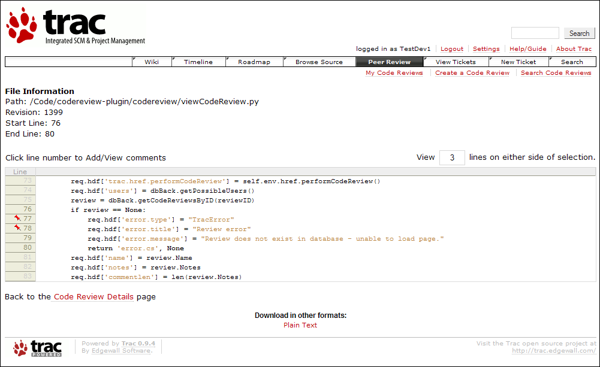
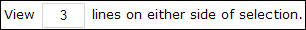
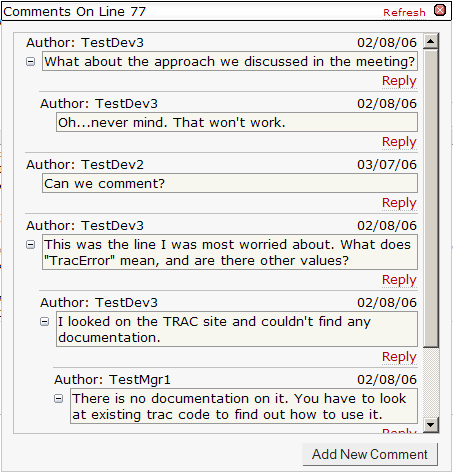
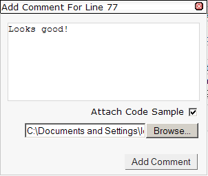

This page allows commentary on code reviews, and viewing others' comments. All users can see the comments posted on this page.

The page shows the file that is being commented on, as well as the revision number and starting and ending lines. Initially, the page shows the section under review with three lines of code on either side of the section. To expand the number of buffer lines shown at the beginning and end, edit:

Note that the number of lines will never exceed the beginning or end of the document. In the case that an invalid number of lines is provided, the page will restore the last valid value entered.
Comments can be associated with each line in the range of lines the author wants others to examine. If a line already has some comments, it is denoted with the symbol. On the side of the code lines are small links that will open a comment editor:

After the comments box is opened, the "Refresh" link updates the comments box to the most updated comments (which is automatically done whenever the box is initially loaded.) Also, users can reply directly to previous posts by clicking the "Reply" link under the existing comment. Alternately, users can add a new comment by clicking the "Add New Comment" button:

This will open up a new comment box, as shown above, where comments can be inserted into the text box. A code sample can be attached as well by clicking on the "Attach Code Sample" box. Then, type the pathname to the desired file on your computer or click the "Browse..." button to pull up a file selection dialog which will fill in the filename. Finally, click on the "Add Comment" button to add the comment so others can view it, or click on the 'X' in the upper-right hand corner to cancel at any time.
Copyright 2005-2006 Team5